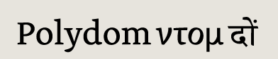
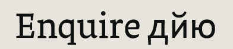
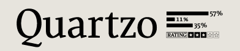
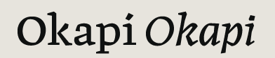
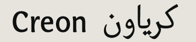
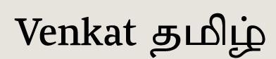
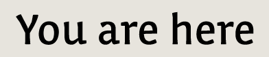

Amélie Bonet (France) email
web
Polydom specimen
Camille Boulouis (France) email
Guillotine specimen
RoP

Antonio Cavedoni (Italy) email
web
Enquire specimen
RoP
Dave Crossland (UK) email
web
Cantarell specimen
published by Abattis

Crystian Cruz (Brazil) email
web
Quartzo specimen
RoP

Gro Janarv (Sweden) email
web
Okapi specimen
RoP

Julia Petretta (Kaestle) (Germany) email
web
Creon specimen
RoP

Jonny Pinhorn (UK) email
Venkat specimen
RoP
Émilie Rigaud (France) email
web
Coline specimen
RoP
Anette Schmidt (Denmark) email
Anglaise specimen
RoP
Eben Sorkin (US) email
web
Arrotino specimen
RoP
Claus Eggers Sørensen (Denmark) email
web
Markant specimen
web specimen
RoP

Gesine Todt (Germany) email
web
You are here specimen
RoP
Thanks!
We’re grateful to a lot of people for helping us all have an extraordinary year.
We would all like to thank the tutors and staff of the Department of Typography & Graphic Communication, University of Reading, especially Martin Andrews, Gerry Leonidas, James Mosley, Fiona Ross, Michael Twyman, and Gerard Unger. Cheers to Jo de Baerdemaeker, Erik van Blokland, David Březina, Tobias Frere-Jones, Victor Gaultney, John Hudson, Richard Kegler, Tal Leming, Titus Nemeth, Fred Smeijers, Adam Twardoch, and our dear Type and Media colleagues from KABK.
We couldn’t have done it without all our families and friends, either!
Typeface designs © the respective authors, 2000–2009.
Website design and production © David Březina, 2007–2009.
The typeface used in the headline is Ronnia by TypeTogether.
Last update: 15 March 2010 — RSS feed